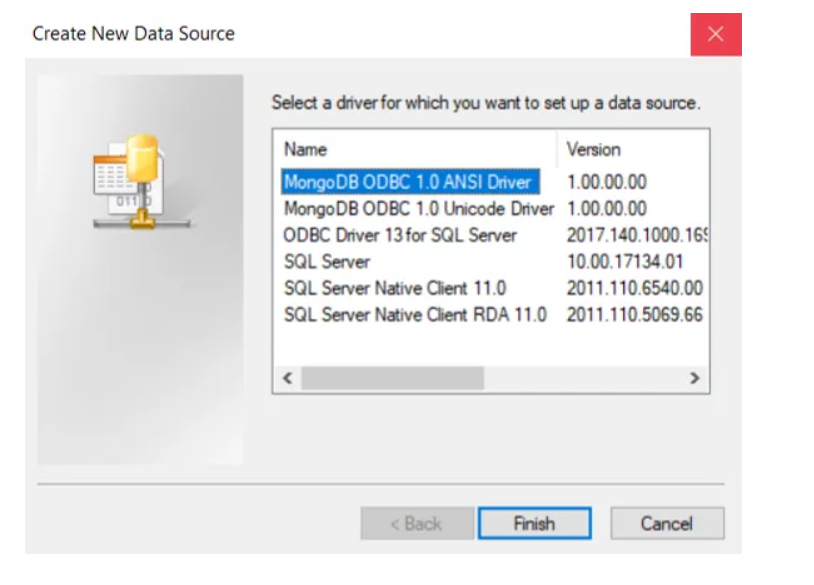

FASE 1: GET DATA¶
Power BI agrupa los tipos de conectores de los que dispone, para extraer información desde los diferentes orígenes por familias.
Archivos o Ficheros¶
Conexión a orígenes de tipo físico, que contienen información estructurada y comprensible para su extracción desde la herramienta.
DataBase¶
Hay dos métodos de conectividad, es decir dos maneras de almacenar las tablas.
Import Query:
-
Extrae la información de la base de datos y la mete dentro de Power BI Desktop.
-
Importa la base de datos con metadatos, estructura, relaciones,...
-
No existen restricciones para hacer cualquier tipo de manipulación.
-
Existe limitación de 1GB para almacenar las tablas en nuestro pbix.
-
La información puede ser actualizada hasta 8 veces por día desde Power BI Service de forma programada o desde Power BI Desktop con el botón Actualizar.
Direct Query
- Lanza varias queries para obtener datos que tenemos en el origen de datos (no almacena los datos en Power BI).
- No permite hacer ciertas manipulaciones (por ejemplo, eliminar columnas).
- La información se actualiza enn vivo (sin botón actualizar).
Otra opción que aparece en los dos métodos de conectividad:
Opciones avanzadas:
- Limita el tiempo de extracción de datos.
- Optimiza el tamaño de las tablas (permitiendo crear consultas).
- Incluye relaciones entre columnas.
Power Platform¶
falta
Servicios externos¶
Obtener datos de una página Web:
Obtener datos de Python:

Obtener datos de Power BI datasets (Centro de datos):Permite obtener las tablas de un pbxi que ya teníamos creado.
Especificar datos:
Conector de MongoDB para BI¶
El conector de BI sirve exclusivamente para unir su clúster de MongoDB con herramientas de inteligencia empresarial, en nuestro caso con PowerBI.
Los componentes son:
- Herramienta de BI: Herramientas de visualización y generación de informes, como Tableau y PowerBI. Se ejecuta en el equipo local.
- JDBC o ODBC conductor: Proporciona un método estándar para conectarse al conector de BI y MongoDB.
- Conector BI: Proporciona un esquema relacional y traduce consultas entre su herramienta de BI y MongoDB.
- MongoDB: Implementación de bases de datos MongoD.
Configuración del conector BI:
Pasos:
-
Asegúrese de que está instalado MongoDB.
-
Descarga e instala MongoDB BI Connector (mongogdb-odbc-connector) seleccionando la versión de acuerdo con la máquina que estés utilizando.
- Agregar mongodb-odbc-driver a los orígenes de datos ODBC.
- Después de instalar ODBC, entra a la carpeta de MongoDB y asegurate de que tienes 2 carpetas nuevas.
- Entra en la carpeta path/Connector for BI/2.1/bin y ejecuta mongosqld.exe y te aparecerá la siguiente pantalla:
- Abre orígenes de datos ODBC desde el menú de inicio.
- Pulsamos "Agregar..." para agregar mongodb-odbc-driver a las fuentes de datos.
- Seleccionamos MongoDB ODBC 1.0 Unicode Driver.

- Completamos la información sobre el conector de BI desde el servicio en ejecución mongosqld.
- Abre Power BI y en obtener datos, seleccionar más para encontrar ODBC.
Seleccionamos el origen de datos que hemos creado en el paso anterior.
Optimización de la carga de datos¶
Cosas que tenemos que tener en cuenta:
- Cargar tablas directamente mediante SQL Queries.
- Quitar columnas innecesarias.
- Elegir tipo de datos adecuado.
- Minimiza el uso de filtros en informes.
- Optimizar el uso de funciones DAX.
- Elimina granularidad en los datos.
Tenemos un Analizador de rendimiento:
- Monitoriza los reports.
- Informes con rendimiento bajo.
- Actualización lenta de datos.
El analizador nos devuelve el tiempo en milisegundos que ha tardado en realizar cada acción.